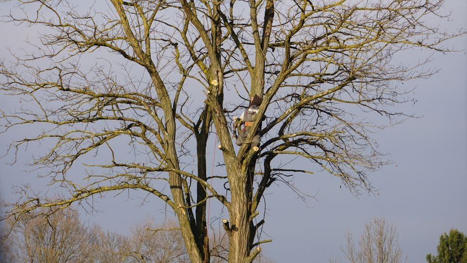

Tree trimming in Winnipeg is not as simple as grabbing a chainsaw on a warm Saturday afternoon. The city's extreme temperature swings, heavy wet snowfalls, and specific urban forestry rules mean that well-intentioned homeowners can cause serious damage to their trees — and sometimes face unexpected consequences with the City — by doing things the wrong way. Whether you have a towering elm in River Heights, a stand of ash in Transcona, or boulevard trees along a St. Vital street, understanding what not to do is just as important as knowing the right technique.

Trimming at the Wrong Time of Year
One of the most widespread mistakes Winnipeg homeowners make is trimming trees at whatever time happens to be convenient — usually a warm weekend in late summer or early fall. In Manitoba's climate, timing matters enormously. Late summer and early fall pruning can stimulate new growth that will not have time to harden before the first hard frost, which in Winnipeg can arrive well before the end of October. That tender new growth dies back, leaving wounds vulnerable to disease and pest damage all winter long.
For most deciduous trees, the ideal pruning window is late winter — typically February through early April in Winnipeg — when trees are still fully dormant but the worst of the cold has passed. This allows cuts to begin healing quickly once spring growth kicks in. Certain ornamentals and fruit trees have their own ideal windows, so it is worth researching the specific species on your property before making any cuts.
Ignoring Dutch Elm Disease Restrictions
Violating elm pruning restrictions is not just a bylaw issue — it is genuinely destructive. A single misjudged trim during the restricted period can expose fresh wood at exactly the moment bark beetles are flying, putting your tree and your neighbours' trees at risk. This is one area where local knowledge from a professional arborist who works regularly in Winnipeg is invaluable.
Topping Trees
"Topping" — cutting back the entire upper canopy of a tree to stubs — is arguably the single most damaging practice in tree care, and it remains common in Winnipeg neighbourhoods. Homeowners often top mature trees because they look too large, seem threatening to the house, or are blocking a view. The result is almost always worse than the original problem. Topped trees produce rapid, weakly attached regrowth that is far more likely to fail in ice storms and high winds. Winnipeg winters are tough on trees to begin with; a topped tree is structurally compromised heading into every freeze-thaw cycle.
If a tree genuinely needs to be reduced in size, professional tree trimming and pruning in Winnipeg uses crown reduction techniques that maintain the tree's natural structure and long-term health, rather than stripping it back to stubs.
DIY Work on Large or Hazardous Trees
Trimming a small ornamental tree from a stable ladder is a reasonable DIY task for many homeowners. Climbing a 50-foot Manitoba maple near a power line or a fence line is not. Falls from trees are a leading cause of serious injury in residential settings, and work near utility lines carries potentially fatal risks. Winnipeg's older neighbourhoods — Wolseley, Crescentwood, Old St. Vital — are full of mature trees with canopies that extend over roofs, fences, and overhead wires, making access genuinely hazardous without proper equipment and training.
It is also worth noting that storm damage to trees can affect surrounding structures. After a heavy wet snow or ice storm, damaged limbs coming down can take out sections of fencing below the tree. If you are dealing with storm aftermath, coordinating tree trimming with Fence Installation Winnipeg can save you multiple separate service calls.
Making Poor Cuts
Even when timing and safety are handled correctly, improper cutting technique causes lasting damage. The most common errors include:
- Flush cuts: Cutting a branch flush against the trunk removes the branch collar — the swollen tissue the tree uses to seal over wounds — leaving a much larger, slower-healing wound.
- Stub cuts: Leaving too much branch extending from the trunk creates a dead stub that rots inward and becomes an entry point for insects and fungal disease.
- Tearing cuts: Using dull tools or cutting branches from the top without undercutting first causes bark to strip downward along the trunk.
Proper cuts are made just outside the branch collar at a slight angle, with clean, sharp tools. Dull saws and bypass pruners crush rather than cut, making every wound significantly larger than it needs to be.
Neglecting Boulevard Trees Without Checking First
Many Winnipeg homeowners do not realize that trees growing in the boulevard — the strip of land between the sidewalk and the street — may be city-owned property. Trimming, removing, or otherwise altering these trees without authorization can create liability and may require you to replace the tree at your own expense. If you are unsure whether a tree at the front of your property falls on city land, contact the City of Winnipeg before doing any work.
A Quick Cost Comparison: DIY vs. Professional Tree Trimming in Winnipeg
| Scenario | DIY Approach | Professional Service |
|---|---|---|
| Small ornamental tree under 15 ft | Manageable with proper tools and technique | Low cost; faster and safer result |
| Mature elm or maple over 30 ft | High injury risk; risk of elm bylaw violation | Recommended; includes proper disposal |
| Tree near power lines or structures | Dangerous; potential utility damage liability | Essential; trained for hazard work |
| Post-storm damaged limbs | Unstable limbs increase fall risk significantly | Assessed and removed safely |
The Bottom Line for Winnipeg Homeowners
Winnipeg's climate, the health of its urban elm canopy, and the age of many residential neighbourhoods make tree trimming a task that rewards careful planning. Getting the timing right, respecting local bylaws, using proper technique, and knowing when a job exceeds DIY scope are the pillars of good tree care in this city. When in doubt, a consultation with a qualified local arborist costs far less than correcting the damage caused by a preventable mistake.
Get Professional Tree Trimming in Winnipeg
Connect with an experienced local tree care crew who knows Winnipeg's trees, seasons, and bylaws — and get a free quote on your property today.
Get My Free Quote